Before I even started searching online I already had an idea in my head about the data that I wanted to play with this month; all winners since the first Olympic Games in 1896. Thankfully, the Guardian had created exactly this dataset right before the 2012 Olympics in London. I only needed to add the results for 2012 and create a dummy start for all of the events at 2016. That 2016 dataset I could then fill with winners while the games were happening. Again, the Guardian helped out by supplying a dataset with all of the medallists from 2012.
However, I quickly found out that the 2012 dataset was missing quite a few winners. So I started manually checking the data, making sure I had winners on all 302 events held in London. I then took the same approach with the previous 29 editions. Aggregating the number of events that had a gold medal winner from my dataset and comparing this with the number of events held according to these wiki pages. Thankfully, all was fine with the data before 2012 except for a few minor (and explainable) things and some horses.
To prepare the 2016 data I took the 2012 file as a base and then made the changes according to a website that outlined the differences between 2012 and 2016.
With 56 different disciplines and thousands of medals I knew that it could never fit in one circle. Looking at the Olympic symbol, 5 circles seemed the next logical choice.
I calculated the maximum number of medals that were ever won for a discipline for one gender. This would give me the width of each discipline. I then combined the sporting disciplines in such a way to get the same total width (adding the separate widths of each discipline) in each ring. This turned out to be quite a challenge, but eventually the grouping became something along the lines of: athletics & gymnastics, shooting & horse, wrestling & fighting, cycling & ball sports, and water sports.
Finally, due to the set-up of the chart I created a very specific json from R. I tried to do as many calculations in R and not in JavaScript, because I find it much much easier and straightforward to do in R. About 12 hours of data finding, wrangling, checking and preparing later, I was left with a pretty large json that contained 5146 medal winners in several layers of nesting, ready to be visualized.
You can find a more extensive explanation about what I did & the dataset itself on the GitHub page of the dataset
By looking at the end result, it might be a bit hard to understand why I'm calling this project the Olympic Feathers. Initially I wanted to turn each discipline into a feather shaped slice. But apart from the feather tips not making the final cut I think that the end result is still very similar to my very first sketch.

Because Shirley was on vacation for the first 2 weeks of August I asked a colleague from work, Jeroen de Lange our Creative director, if he'd like to help me think out the design some more. It really helped a lot to explain my idea and him asking questions back. That's how I found some issues with my initial simple sketch. For one, a sporting discipline has many events in which a medal can be won so several feathers would get really wide, such as athletics and swimming.
Also, the number of events has changed a lot throughout the years. Therefore, I had to make a choice on what exactly would define 1 medal. Since I was working with circles, in the end it seemed most logical to use the same arc length (i.e. number of degrees) to define one medal. This would create a lot of white space for disciplines in which one edition had tried out a lot of different events. However, I felt that would actually give an interesting insight into the history of the Olympics.

That evening, I sketched out a more detailed version to see how it might look with the new insight I'd gained about the data. I focused on the medals themselves because wasn't quite if the they should be ordered in a specific order, so always Americas first, then Asia and so on. Or to ordered them according to which continent won the most medals (for that gender and for that edition). I eventually chose the latter, because again, like the whitespace, it would give an extra level of insight into the data.

After the sketch above, I got to the point where I just had to start coding it out to see how our ideas would work with the data instead of sketching more detailed ideas and guessing about how it would apply to the Olympics data.
First, I just needed to get those circles on the screen using the carefully prepared nested json. As always, that never happens correctly the first time you think you have enough code pulled together to get something decent on the screen. Below left, for example, is what happens when you forget that, although CSS' rotate works with degrees, Math.cos() / Math.sin() works with radians. On the right of the image, all of the disciplines were rotated to the same degree, overplotting each other...
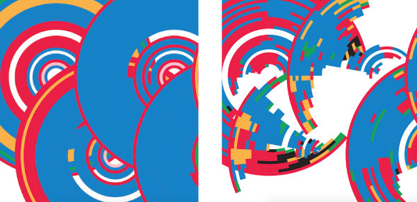But what I love about designing with code is that, once you have it working for one object, that it works for all of them. More than 5000 medals come together on the screen correctly and you can finally see actual data and all its wonders and visual "I wish that wasn't in the data..." issues. Something you could never achieve in a sketch or static mock. Below is one of the first screenshots where all the feathers were placed correctly, with their labels.
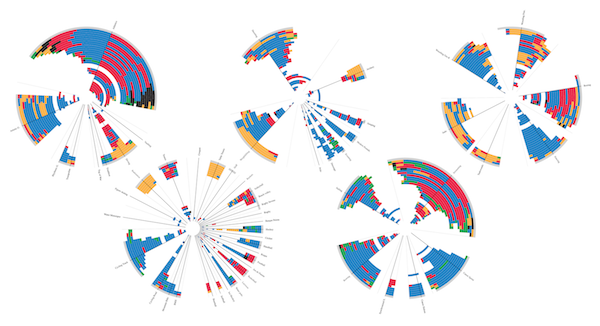And then I started working on the feather shape. I had not expected that some disciplines would be so wide. Athletics took up more than half a circle! This meant that I couldn't use 1 feather tip for each discipline, instead the wider disciplines would need to get multiple tips. Luckily, my work with the LotR visualization from last month, meant that custom SVG paths were still fresh in my mind and it surprised me how fast I got the feather shape with multiple tips together. Below you can see two different color schemes I tried out; white feathers on a grey background or the reverse.
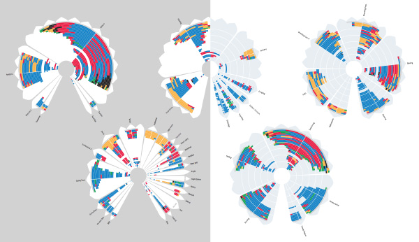I send a screenshot to Jeroen who then, in a gentle way, made it clear that the feather tips weren't working with the design. It was a bit painful for me to comment out that custom piece of feather code, especially since in my mind the project was called Olympic Feathers, but I knew it was in the best interest of the end result to follow his advice.
The white space in the feathers was then given a function. By filling it with a color the gender difference became easier to read. Using a light radial gradient made it nice and subtle. And with that, the feathers themselves were looking practically finished.
The final big leg was getting the introduction, annotations and legends in there nicely. Jeroen came with a wonderful example on how to place the title and introduction together that I then reproduced. And the final tweaks always take more time than you think. Maybe it was also due to simultaneously watching the Olympics during about 90% of the time that I was coding that made that last part take a bit longer, haha.
After the Olympics were done I added one more thing to the data & visual that I had in mind from the start. Some sport disciplines have Olympic records, such as athletics and swimming. As an extra level of detail, I placed a white dot on the events in which the gold medalist reached a currently standing Olympic record.
Below you can see the visual part of the end result. You can hover over each medal to see who or which team won it and you can also hover over the time-line in the bottom section of each circle to highlight only that particular edition. The full interactive version can be found here. It's definitely not a "understood within 5 seconds" chart. You need to get the visual encoding first, but when you do (which I feel isn't too hard) there's a lot of interesting information to find. Just the way I like my visualization to be; a little bit of effort to gain a lot.
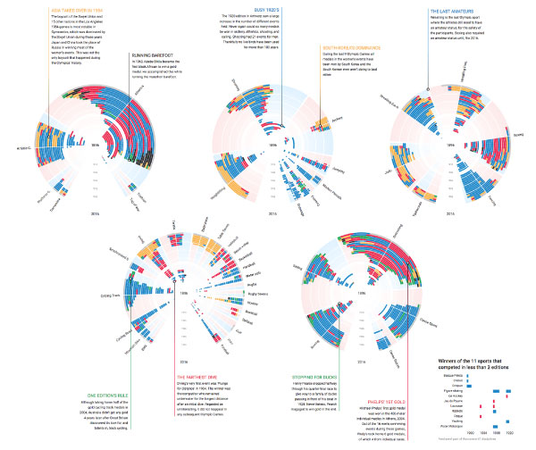It came out during August 13th so I kept updating the visual with the new medal data each day and sharing insights that I'd learned along the way. I was already a big fan of the Olympics, but after the insights I gained from building/investigating this visual that only increased!
A final note, I completed this month in half of the allotted time. That was because I wanted to share the visual before the end of the Olympics. So data prep & sketching happened in the week before the Olympics and the coding happened in the 1st week of the Olympics (and then daily updates for another week). Crazy, hectic, tiring and fun weeks :)
Ever since I was a kid, I've loved watching the summer Olympics, and out of all the events, I especially loved gymnastics and diving. And though it was mostly because I come from a Chinese household and it was all we watched, I also loved the two for their grace and beauty.
But as I've gotten older, I watched less. I missed the last two Olympics entirely because of travel. So I was a bit nervous when Nadieh suggested Olympics for this month - especially since I'd be traveling for the first 12 days of the events. But thanks to a whole afternoon fiddling with VPNs and Nadieh's guidance on which events to watch, I was able to binge an inordinate amount of gymnastics and diving when I got back from Asia.
Out of all of the events, I enjoyed synchronized diving the most. That wasn't around when I was a kid, and I marveled at the trust and respect of each partnership - what it must take to be so in sync with each other. They were driven by a responsibility to do well for their partner, by a fear of letting them down. And when the teams medaled, their tearful embraces were beautifully emotional.
I wanted to recreate that beauty somehow.
I thought maybe I could do something with their scores. The women's events have five rounds, and men's have six. Each round consists of a difficulty score, six execution scores and five synchro scores. I wanted to get the scores of the top three teams of each event.
That's a lot of data.
The actual data gathering process was absolutely painful: I re-watched all four synchro events and manually entered all of the scores. It wasn't until I had gotten all the data that I found them all on the Rio Olympics website. I threw a bit of a fit over that one 😭
Because of my travels this month, my process was thrown off all over the place. I actually had a sense of what I wanted to do before I even had my data gathered.
Somewhere in the middle of my trip, Micah tweeted me this beauty:
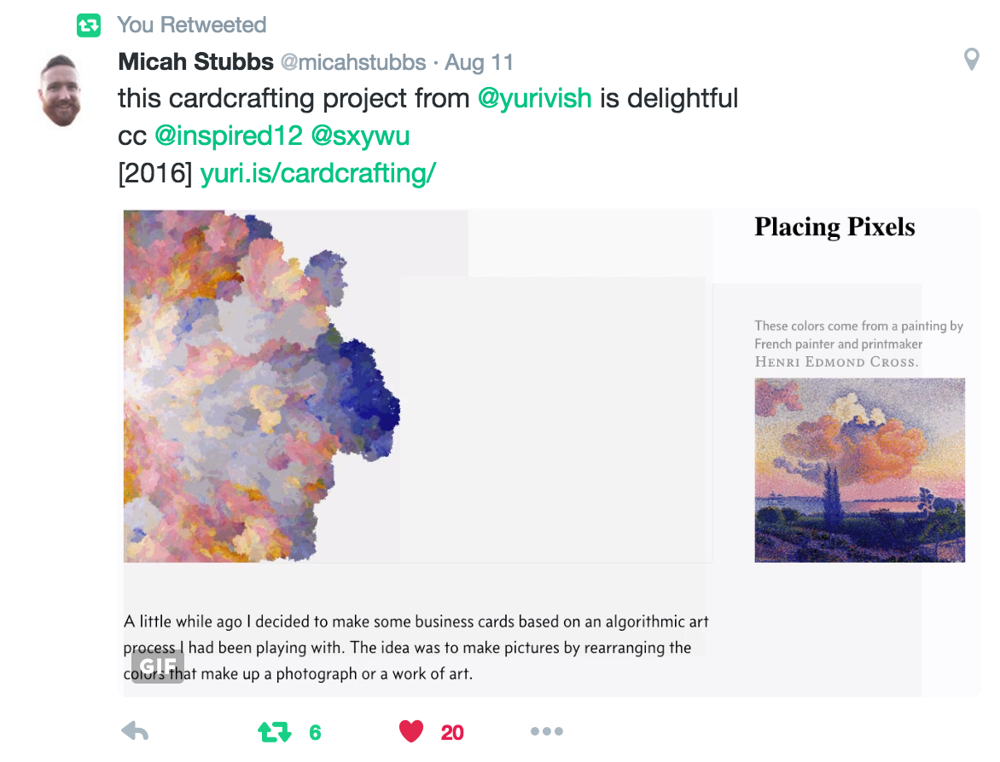It was a link to Yuri Vishnevsky's experimentation with algorithmic art in trying to generate a set of unique business cards. Some of them in particular looked like the top-down view after the divers had entered the water, and I knew I wanted to have a similar effect for my visualization:
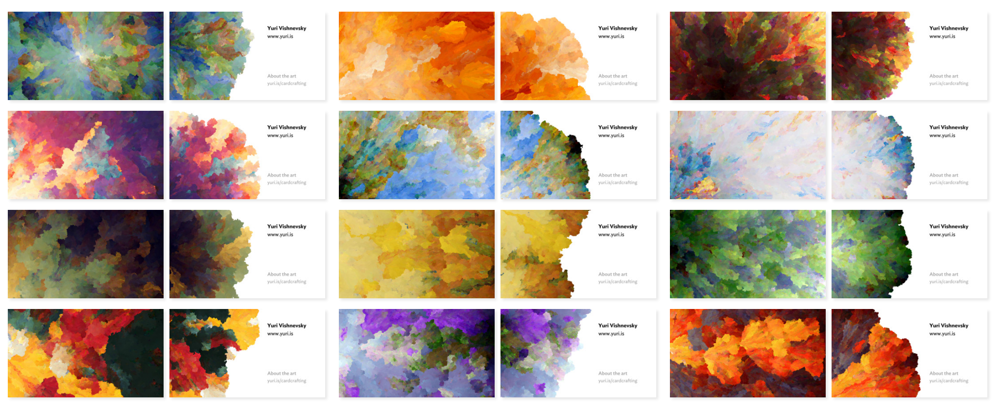Yuri didn't provide a link to his code, but did mention a stackexchange challenge where he got his inspiration, and one mention of the term "fractal search algorithm". I latched on to that term, and figured it was as good a place as any to try. And a quick search for "fractal search algorithm javascript" got me to Dan Gries' tutorial for Sweeping Fractal Lines:
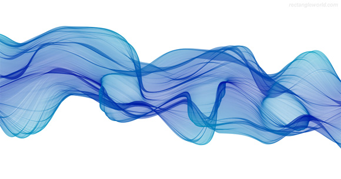Gorgeous.
And though it wasn't Yuri's water splash, it reminded me of silk flowing through water. It reminded me of ink in water. I thought, if I could make the divers's data look like this - how beautiful would that be?
I had enough ideas (though no sketches) to get right into it as soon as I got back from Asia (with only 1.5 weeks to spare).
The first few days was spent just trying to understand Dan's code. At only ~250 lines, it was beautiful in its brevity. As with any piece of code I wanted to understand, I printed out all the lines, and went through them line by line for understanding: 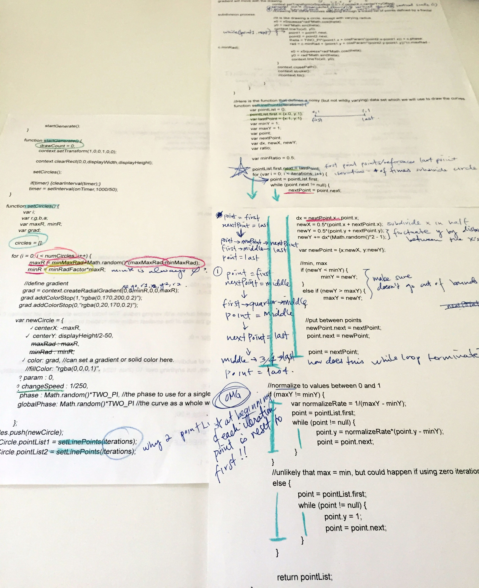 (I don't promise my notes to be intelligent.)
The key was to understand enough of what was going on to be able to replace the randomly generated data with my diving data. After the first day, I was able to boil it down to two key points:
My first attempt at adapting Dan's code took a while and didn't turn out quite as I expected. I understood setLinePoints quite well and thus was able to use the divers' execution scores to generate the curves, but didn't understand some of the key parts of onTimer. And because onTimer took care of actually drawing the circles, I ended up with this:
 DS Aug, Code 1
DS Aug, Code 1
Not quite what I was expecting, heh. Primarily, I wasn't grasping how Dan was interpolating the shapes of the curves, creating the weird discontinuity between sections. I knew then that I had to re-implement Dan's code in a way that I could understand. So I kept most of the code from setLinePoints, but completely rewrote the rest with a custom D3 interpolater to help transition from each curve/round to the next. This worked marvelously: DS Aug, Code 3
And just for fun, I also made it animate like Dan's did (the gif isn't quite so smooth, but I promise the actual code is 😁): DS Aug, Code 4
After that, I had to refactor the code a little bit to be able to show and animate multiple of the flows, with each flow representing a country. My happiest moment was getting the animation working for all of the flows, and having the length of the animation dependent on the length of the flow instead of a set duration (I'm all about these small wins ✌️). 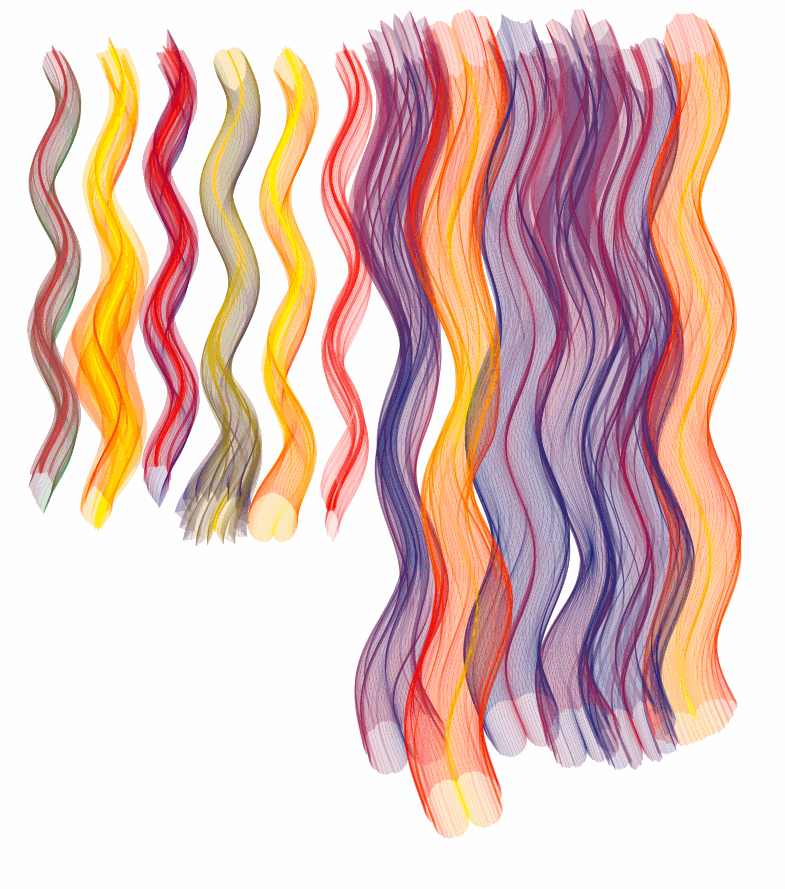 DS Aug, Code 6
All I had left to do after that was add in the event names, team information, and the scores for each round: 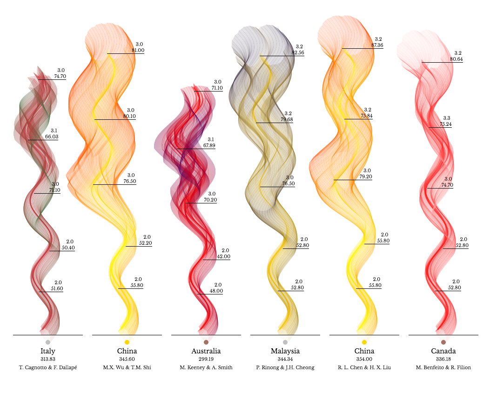 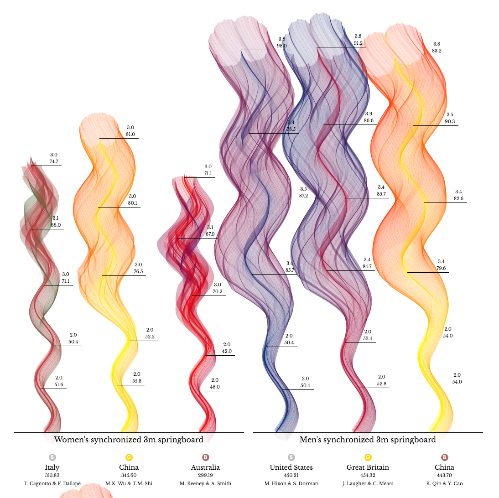
I have to admit, I'm not fully satisfied with the final version. I wanted to add in annotations, pointing out incredible and emotional moments in each event - because that was what made each of the events so beautiful to me. I wanted to link to videos of those moments (I actually have all the links collected), but I was out of time; I had already bled into September. I was also unsatisfied with the aesthetics; I was hoping for silk flowing in water, and instead I got...smoke billowing in the wind?
But like Nadieh adviced me sometime in August: the important thing isn't perfection (or near-perfection), but to produce something. We'll have good months, and bad months, but the act of finishing is an important one. And she's absolutely right; though I'm not satisfied with the outcome, I am very happy that I pushed through the technical challenges and managed to finish. And in a way, smoke in the wind is beautiful too 😀.
{kind=link}
{kind=link}
{kind=link}
{kind=link}
{kind=link}
{kind=link}
{kind=link}
{kind=link}
{kind=link}
{kind=link}
{kind=link}
{kind=link}